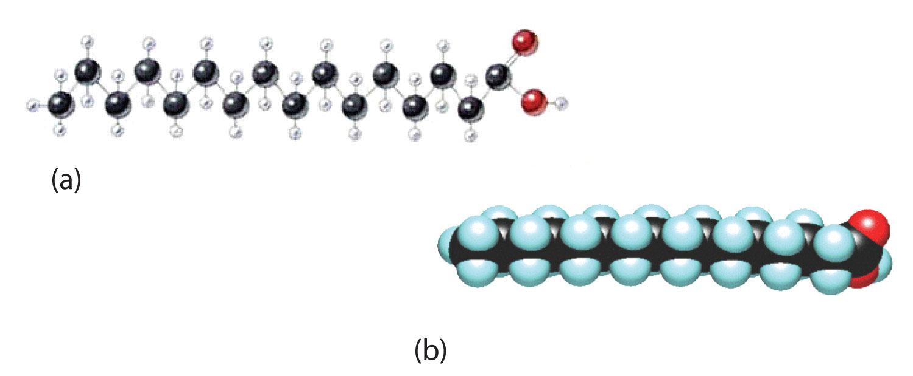

Fatty acidsA carboxylic acid that is a structural component of fats and oils. are carboxylic acids that are structural components of fats, oils, and all other categories of lipids, except steroids. More than 70 have been identified in nature. They usually contain an even number of carbon atoms (typically 12–20), are generally unbranched, and can be classified by the presence and number of carbon-to-carbon double bonds. Thus, saturated fatty acidsA fatty acid that has no carbon-to-carbon double bonds. contain no carbon-to-carbon double bonds, monounsaturated fatty acidsA fatty acid that has one carbon-to-carbon double bond. contain one carbon-to-carbon double bond, and polyunsaturated fatty acidsA fatty acid that has two or more carbon-to-carbon double bonds. contain two or more carbon-to-carbon double bonds. Table 17.1 "Some Common Fatty Acids Found in Natural Fats" lists some common fatty acids and one important source for each. The atoms or groups around the double bonds in unsaturated fatty acids can be arranged in either the cis or trans isomeric form. Naturally occurring fatty acids are generally in the cis configuration. (For more information about cis-trans isomerism, see Chapter 13 "Unsaturated and Aromatic Hydrocarbons", Section 13.2 "Cis-Trans Isomers (Geometric Isomers)".)
Table 17.1 Some Common Fatty Acids Found in Natural Fats
| Name | Abbreviated Structural Formula | Condensed Structural Formula | Melting Point (°C) | Source |
|---|---|---|---|---|
| lauric acid | C11H23COOH | CH3(CH2)10COOH | 44 | palm kernel oil |
| myristic acid | C13H27COOH | CH3(CH2)12COOH | 58 | oil of nutmeg |
| palmitic acid | C15H31COOH | CH3(CH2)14COOH | 63 | palm oil |
| palmitoleic acid | C15H29COOH | CH3(CH2)5CH=CH(CH2)7COOH | 0.5 | macadamia oil |
| stearic acid | C17H35COOH | CH3(CH2)16COOH | 70 | cocoa butter |
| oleic acid | C17H33COOH | CH3(CH2)7CH=CH(CH2)7COOH | 16 | olive oil |
| linoleic acid | C17H31COOH | CH3(CH2)3(CH2CH=CH)2(CH2)7COOH | −5 | canola oil |
| α-linolenic acid | C17H29COOH | CH3(CH2CH=CH)3(CH2)7COOH | −11 | flaxseed |
| arachidonic acid | C19H31COOH | CH3(CH2)4(CH2CH=CH)4(CH2)2COOH | −50 | liver |
Two polyunsaturated fatty acids—linoleic and α-linolenic acids—are termed essential fatty acidsA fatty acid that must be obtained from the diet because it cannot be synthesized by the human body. because humans must obtain them from their diets. Both substances are required for normal growth and development, but the human body does not synthesize them. The body uses linoleic acid to synthesize many of the other unsaturated fatty acids, such as arachidonic acid, a precursor for the synthesis of prostaglandins. In addition, the essential fatty acids are necessary for the efficient transport and metabolism of cholesterol. The average daily diet should contain about 4–6 g of the essential fatty acids.
Prostaglandins are chemical messengers synthesized in the cells in which their physiological activity is expressed. They are unsaturated fatty acids containing 20 carbon atoms and are synthesized from arachidonic acid—a polyunsaturated fatty acid—when needed by a particular cell. They are called prostaglandins because they were originally isolated from semen found in the prostate gland. It is now known that they are synthesized in nearly all mammalian tissues and affect almost all organs in the body. The five major classes of prostaglandins are designated as PGA, PGB, PGE, PGF, and PGI. Subscripts are attached at the end of these abbreviations to denote the number of double bonds outside the five-carbon ring in a given prostaglandin.
The prostaglandins are among the most potent biological substances known. Slight structural differences give them highly distinct biological effects; however, all prostaglandins exhibit some ability to induce smooth muscle contraction, lower blood pressure, and contribute to the inflammatory response. Aspirin and other nonsteroidal anti-inflammatory agents, such as ibuprofen, obstruct the synthesis of prostaglandins by inhibiting cyclooxygenase, the enzyme needed for the initial step in the conversion of arachidonic acid to prostaglandins.
Their wide range of physiological activity has led to the synthesis of hundreds of prostaglandins and their analogs. Derivatives of PGE2 are now used in the United States to induce labor. Other prostaglandins have been employed clinically to lower or increase blood pressure, inhibit stomach secretions, relieve nasal congestion, relieve asthma, and prevent the formation of blood clots, which are associated with heart attacks and strokes.
Although we often draw the carbon atoms in a straight line, they actually have more of a zigzag configuration (part (a) of Figure 17.2 "The Structure of Saturated Fatty Acids"). Viewed as a whole, however, the saturated fatty acid molecule is relatively straight (part (b) of Figure 17.2 "The Structure of Saturated Fatty Acids"). Such molecules pack closely together into a crystal lattice, maximizing the strength of dispersion forces and causing fatty acids and the fats derived from them to have relatively high melting points. In contrast, each cis carbon-to-carbon double bond in an unsaturated fatty acid produces a pronounced bend in the molecule, so that these molecules do not stack neatly. As a result, the intermolecular attractions of unsaturated fatty acids (and unsaturated fats) are weaker, causing these substances to have lower melting points. Most are liquids at room temperature.
Figure 17.2 The Structure of Saturated Fatty Acids
(a) There is a zigzag pattern formed by the carbon-to-carbon single bonds in the ball-and-stick model of a palmitic acid molecule. (b) A space-filling model of palmitic acid shows the overall straightness of a saturated fatty acid molecule.
Waxes are esters formed from long-chain fatty acids and long-chain alcohols. Most natural waxes are mixtures of such esters. Plant waxes on the surfaces of leaves, stems, flowers, and fruits protect the plant from dehydration and invasion by harmful microorganisms. Carnauba wax, used extensively in floor waxes, automobile waxes, and furniture polish, is largely myricyl cerotate, obtained from the leaves of certain Brazilian palm trees. Animals also produce waxes that serve as protective coatings, keeping the surfaces of feathers, skin, and hair pliable and water repellent. In fact, if the waxy coating on the feathers of a water bird is dissolved as a result of the bird swimming in an oil slick, the feathers become wet and heavy, and the bird, unable to maintain its buoyancy, drowns.
Give an example of each compound.
Why do unsaturated fatty acids have lower melting points than saturated fatty acids?
Unsaturated fatty acids cannot pack as tightly together as saturated fatty acids due to the presence of the cis double bond that puts a “kink” or bend in the hydrocarbon chain.
Classify each fatty acid as saturated or unsaturated and indicate the number of carbon atoms in each molecule.
Classify each fatty acid as saturated or unsaturated and indicate the number of carbon atoms in each molecule.
Write the condensed structural formula for each fatty acid.
Write the condensed structural formulas for each fatty acid.
Arrange these fatty acids (all contain 18 carbon atoms) in order of increasing melting point. Justify your arrangement.
Arrange these fatty acids (all contain 16 carbon atoms) in order of increasing melting point. Justify your arrangement.
c < a < b; an increase in the number of double bonds will lower the melting point because it is more difficult to closely pack the fatty acids together.